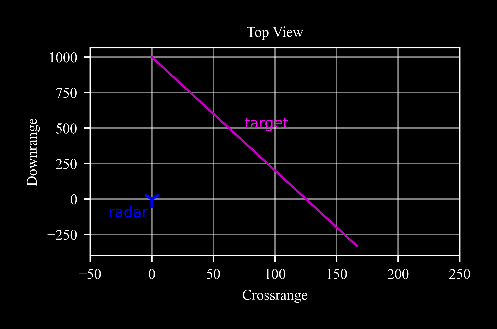

radar is a subclass of seeker
and utilizes its functionality and errors model for angular measurements.
This documentation supplaments the information concerning range measurements.
Refer to seeker for the full documentation.
The radar class models sensors that
measure both the range and the direction to a target.
The direction is measured in terms of azimuth and elevation.
Sensors that provide precise range measurements
typically use electro-magnetical technology,
though other technologies may also be employed.
As a subclass of seeker, the radar
can operate in one of two modes: ideal mode,
providing precise range and direction measurements,
or non-ideal mode,
where measurements may be affected by errors such as
scale factor, bias, and noise,
according to the errors model.
A random variable generation mechanism allows
for Monte Carlo simulations.
Parameters:
origin (rigidbody, optional) – A rigidbody object whose state vector X
determines the radar’s initial position and attitude.
Defaults: a rigidbody object with zeros vector, X = numpy.zeros(12).
isideal (bool, optional) – A flag indicating whether the errors model is off.
Defaults False.
Keyword Arguments:
rng_noise_std (float) – A standard deviation of the radar range. Default value for non-ideal radar: rng_noise_std = 1m.
bias_std (float) – The standard deviation of the bias error, [radians]. Defaults \(0.3°\).
scale_factor_std (float) – The standard deviation of the scale factor error, [dimensionless]. Defaults \(0.07 (= 7\%)\).
noise_std (float) – The standard deviation of the radar angular noise, [radians].
Default value for non-ideal radar: \(0.8°\).
dt (float) – The time-constant of the operational rate of the radar
(below which the radar measures return None), [seconds]. Default value: \(dt = -1sec\)
(no limit between calls to measure).
Note the default values for angular parameters, bias_std, scale_factor_std,
and noise_std, differ from those in a seeker object.
The azimuth and elevation angles are subject to errors: scale factor, bias, and noise,
as detailed in seeker.
A radar instance has in addition range noise:
RangeNoise:
represents random variations or fluctuations in the measurements
that are not systematic.
The noise at each sample (measure)
is a normally distributed variable
with mean = 0 and std = rng_noise_std, where rng_noise_std
is a radar parameter with default value of 1m.
Angular errors:
Bias:
represents a constant offset or deviation from the
true value in the seeker’s measurements.
It is a systematic error that consistently affects the measured values.
The bias of a seeker instance is a normally distributed variable with mean = 0
and std = bias_std, where bias_std is a parameter with default value of 0.3°.
ScaleFactor:
a multiplier applied to the true value of a measurement.
It represents a scaling error in the measurements made by the seeker.
The scale factor of a seeker instance is
a normally distributed variable
with mean = 0 and std = scale_factor_std,
, where scale_factor_std is a parameter with default value of 0.07.
Noise:
represents random variations or fluctuations in the measurements
that are not systematic.
The noise at each seeker sample (measure)
is a normally distributed variable
with mean = 0 and std = noise_std, where noise_std
is a parameter with default value of 0.8°.
The errors model generates random variables for each radar instance,
allowing for the simulation of different scenarios or variations in the radar behavior
in a technique known as Monte Carlo.
Monte Carlo simulations leverage this randomness to statistically analyze
the impact of these biases and scale factors over a large number of iterations,
providing insights into potential outcomes and system reliability.
Radar vs Seeker
The following table
lists the main differences between
seeker and radar
in terms of measurements and
default error parameters:
Angles
Range
\(σ_{Bias}\)
\(σ_{Scale Factor}\)
\(σ_{Angular Noise}\)
\(σ_{Range Noise}\)
Seeker
✔️
❌
\(0.1°\)
\(5%\)
\(0.4°\)
\(--\)
Radar
✔️
✔️
\(0.3°\)
\(7%\)
\(0.8°\)
\(1m\)
rigidbody
The radar class is also a subclass of
rigidbody, i.e.
it suggests attributes of position and attitude and the manipulation of them.
As a fundamental propety, the
rigidbody’s state vector
X
sets the spatial coordinates of the radar:
\[X = [x, y, z, v_x, v_y, v_z, {\varphi}, {\theta}, {\psi}, p, q, r]^T\]
The first six coordinates determine the translational position and velocity of the radar
while the last six determine its angular attitude in terms of Euler angles and
the body rates.
Passing a rigidbody parameter as an origin sets
the initial conditions of the radar.
Construction
A radar instance is created by making a direct call
to the radar constructor:
>>> rdr=c4d.sensors.radar()
Initialization of the instance does not require any
mandatory arguments, but the radar parameters can be
determined using the **kwargs argument as detailed above.
The method inteqm
of the
datapoint class
integrates the 3 degrees of freedom equations of motion with respect to
the input force vector (np.zeros(3) here).

Since the call to measure requires a target as a datapoint object
we utilize a custom create function that returns a new datapoint object for
a given X state vector in time.
c4d.kmh2ms converts kilometers per hour to meters per second.
c4d.r2d converts radians to degrees.
c4d.d2r converts degrees to radians.
Origin
Let’s also introduce a pedestal as an origin for the radar.
The pedestal is a rigidbody object with position and attitude:
where rdr_ideal.BR is a
Body from Reference DCM (Direction Cosine Matrix)
formed by the radar three Euler angles
Now az_true and el_true are the true target angles with respect to the radar, and
rng_true is the true range (atan2d is an aliasing of numpy’s arctan2
with a modification returning the angles in degrees):
The scale factor error increases with the angle, such that for a \(7%\)
scale factor,
the error of \(Azimuth = 100°\) is \(7°\), whereas the error for
\(Elevation = -15°\) is only \(-1.05°\).
The standard deviation of the noise in the two angle channels is the same.
However, as the Elevation values are confined to a smaller range, the effect
appears more pronounced there.
Rotating Radar
Measure the target position with a rotating radar.
The radar origin is yawing (performed by the increment of \(\psi\)) in the direction of the target motion:
The rotation of the radar with the target direction
keeps the azimuth angle limited, such that non-rotating radars with limited FOV (field of view)
would have lost the target.
Operation Time
By default, the radar returns measurments for each
call to measure. However, setting the parameter dt
to a positive number makes measure return None
for any t < last_t + dt, where t is the current measure time,
last_t is the last measurement time, and dt is the radar time-constant:
The distribution of normally generated random variables
is characterized by its bell-shaped curve, which is symmetric about the mean.
The area under the curve represents probability, with about 68% of the data
falling within one standard deviation (1σ) of the mean, 95% within two,
and 99.7% within three,
making it a useful tool for understanding and predicting data behavior.
In radar objects, and seeker objects in general,
the bias and scale factor vary
among different instances to allow a realistic simulation
of performance behavior in a technique known as Monte Carlo.
Let’s examine the bias distribution across
mutliple radar instances with a default bias_std = 0.3°
in comparison to seeker instances with a default bias_std = 0.1°: